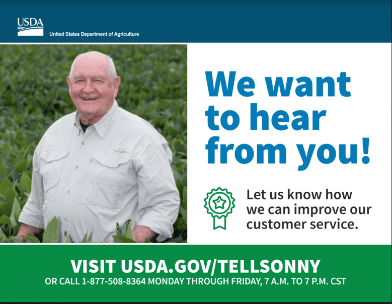

An official website of the United States government
The .gov means it’s official.
Federal government websites often end in .gov or .mil. Before sharing sensitive information, make sure you’re on a federal government site.
The site is secure.
The https:// ensures that you are connecting to the official website and that any information you provide is encrypted and transmitted securely.
Contact Center
Will accelerate IT modernization and optimize external-facing contact centers across USDA.
We understand the importance of connecting customers with the right resources and expertise across all all information channels. Through conducting best practice research, the Contact Center CoE is developing a data-driven strategy leveraging proven practices and lessons learned from both public and private sector organizations. The goal is to establish a repeatable methodology to help agencies improve how they deliver services and interact with their citizens.
Service Offerings
Workflow documentation support
Knowledge management strategy development
Future state visioning support
Tailored best practice research
Contact center maturity assessment
Accomplishments
Launched and analyzed survey results to develop a comprehensive inventory of USDA’s external-facing contact centers (April 2018)
Leveraged preliminary Contact Center Maturity Index as a framework for assessing the current state of USDA’s contact center capabilities (April 2018)
Conducted best practice research to identify best-in-class contact center features enabling mission, increasing customer satisfaction, and reducing costs (April 2018)
Engaged with stakeholders within USDA and across federal government to identify areas of opportunity and lessons learned to expedite contact center optimization (April 2018)
Documented the current customer journey and interactions with USDA by mapping phone trees of external-facing contact centers (May 2018)
Spearheaded USDA’s “Tell Sonny” voice of the customer program to better understand the needs and expectations of farmers, ranchers, producers, foresters and consumers. (May 2018)
Conducted stakeholder interviews with Contact Center Managers at USDA to augment current state assessment (June 2018)
Developed future-state vision of an omni-channel capable OneUSDA front-door contact center to address pain points identified in current state assessment and apply best practices (July 2018)
Created enterprise-wide knowledge management strategy to facilitate consistency and improve efficiency throughout the customer experience (July 2018)
Developed Chief Customer Office to-be vision and organization structure based on best practice research, in order to streamline and unify customer experience operations and initiatives at USDA (August 2018)
Projected a 58% in cost savings anticipated from the OneUSDA contact center over a three-year period to quantify financial management efficiency goals (August 2018)
The GSA Center of Excellence (CoE) for Contact Center of the Future conducted best practice research on leading contact centers. The CoE studied organizations known for their exemplary customer experience in both the public sector (e.g., Center for Disease Control) and private sector (e.g., Microsoft). These studies illuminated trends in managing successful contact center optimization efforts, such as shifting to lower tiers for cost savings, implementing emerging technology, and developing a workforce strategy to account for surges and slumps in call volume.
Drawing from these learnings, the CoE is embedding known best practices and innovative strategies in the plan for the OneUSDA Contact Center. As the CoE "Lighthouse Agency," the future OneUSDA Contact Center will serve as a best practice leader itself, and will act as a model for other government agencies to follow.
(Click here to read Full Article)
White Paper: Emerging Technologies in Contact Centers
The GSA Center of Excellence (CoE) for Contact Center of the Future conducted extensive research on contact center innovations to improve customer experience. This Whitepaper, Emerging Technologies in Contact Centers, synthesizes this research into two key innovation trends: omnichannel services and emerging technologies. Omnichannel services allow customers consistent, frictionless experience across communication channels, while emerging technologies such as Artificial Intelligence (AI), Robotic Process Automation (RPA), and Internet of Things (IoT) drive efficiencies. The CoE is working to leverage these trends to increase customer satisfaction while lowering costs.
(Click here to read the White Paper)
On April 3, 2018, USDA Secretary Sonny Perdue launched his second “Backed to Our Roots” RV Tour across the country.

In support of this tour, the Contact Center CoE, in partnership with USDA’s Office of Communications and Office of Customer Experience, helped launch a single, easy to use web form and an toll-free number that allows the public to provide direct feedback to USDA leadership.
In close collaboration with USDA staff and agency leadership, the CoE developed questions for the web form and contact center script. The CoE created created short-term solution for escalating customer issues and ensuring their inquiries are resolved. Supporting Tell Sonny gave us important insights into USDA’s internal processes and points of contact for the intake, tracking, and resolving of customer feedback and provides a great preview for our broader CoE work around the Voice of the Customer.